Real estate in Agadir
NARJISS has been a property developer in Agadir since 1990. Here are all our developments in and around the city — new apartments and building plots — each with its neighbourhood, its plans and, where available, its 360° virtual tour.
12 projects currently on sale
Our projects in Agadir
New apartments (4)
-
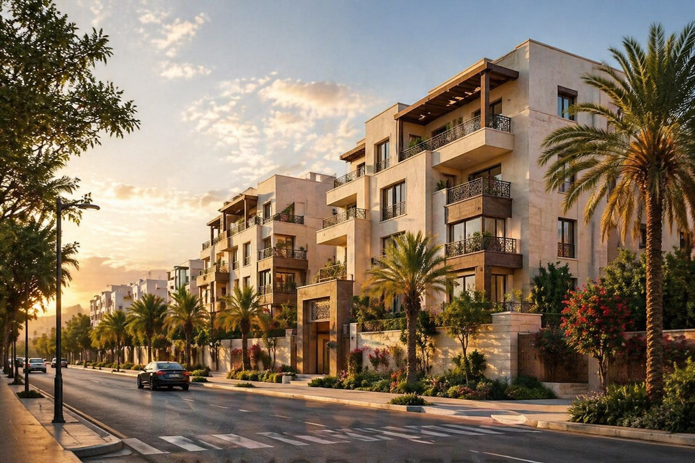
Al Jawhara Residence 📍 Dcheira El Jihadia, Agadir Narjiss residential project in Dcheira El Jihadia, near Agadir. View project → -
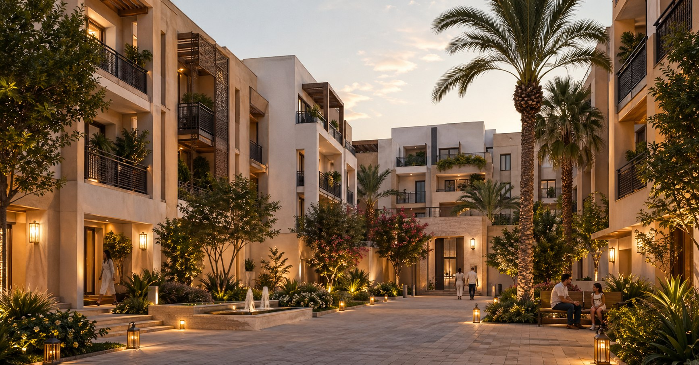
Bayt Al Mawada 📍 Drarga, Agadir Narjiss residential project with multilingual map display. View project → -
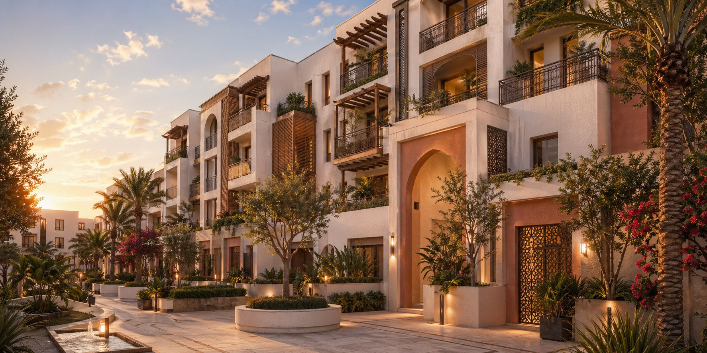
R+3 Andalusia 📍 Agadir Apartment project with interactive map and advanced presentation experience. View project → -
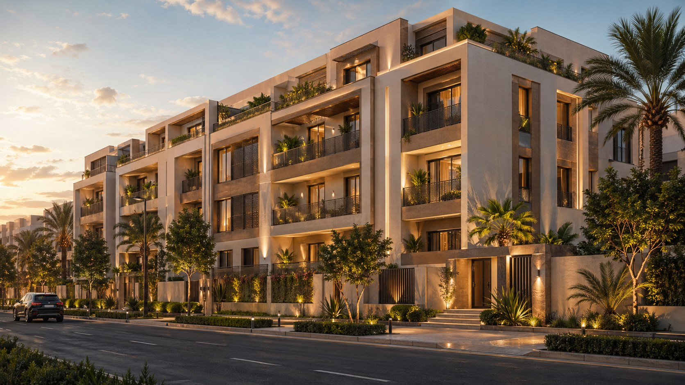
R+4 K&B 📍 Agadir Apartment project presented with map and nearby context data. View project →
Building plots (8)
-
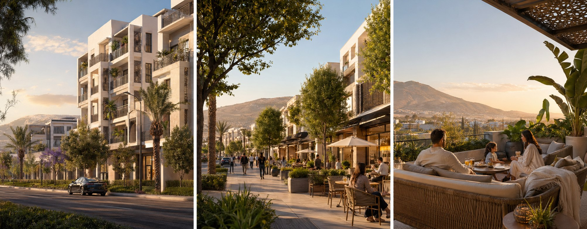
Tazroute 📍 Tazroute, Agadir Narjiss land project presented with precise location and interactive map. View project → -
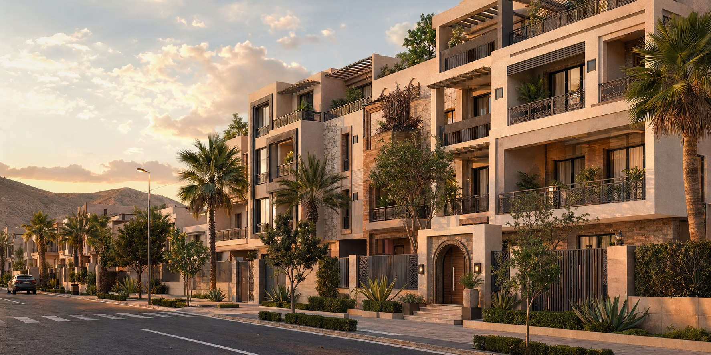
Dar Ben Cheikh 📍 Dar Ben Cheikh, Agadir Narjiss land project with clear nearby context. View project → -
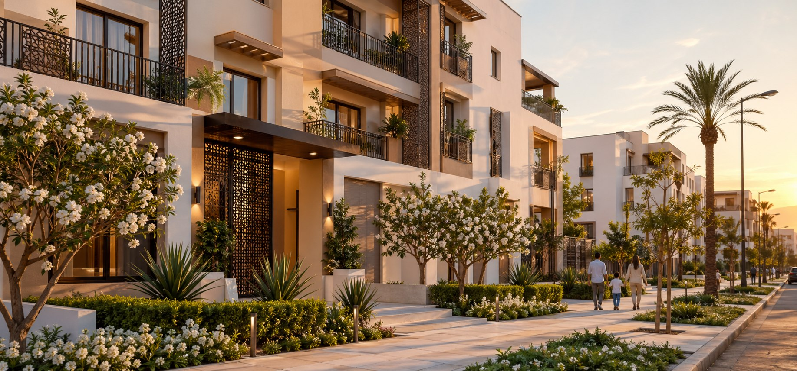
Tazroute Al Yassamine 📍 Tazroute, Agadir Narjiss land project with map context. View project → -
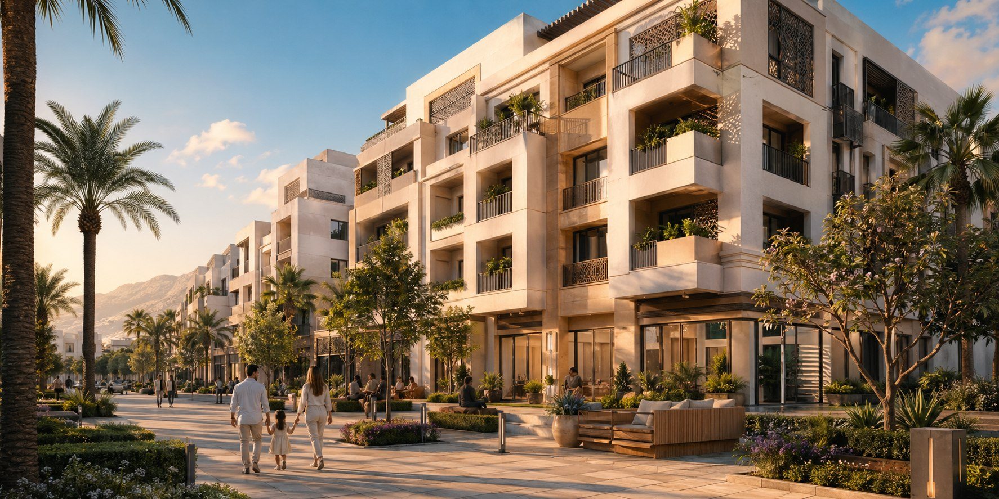
Farah 📍 Hay Farah, Agadir Land project with a rich set of mapped useful points. View project → -
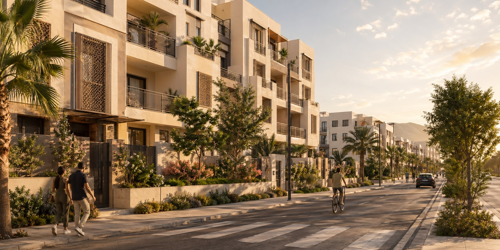
Lot Amical I 📍 Les Amicales, Agadir Project shown with its position, useful points and local context. View project → -
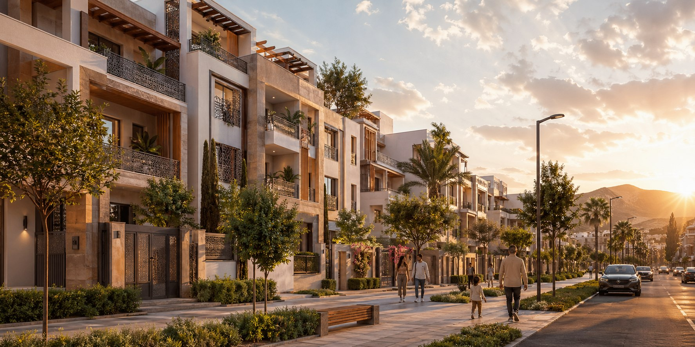
Lot Azrou 📍 Azrou, Agadir Narjiss land project near the other Tazroute developments. View project → -
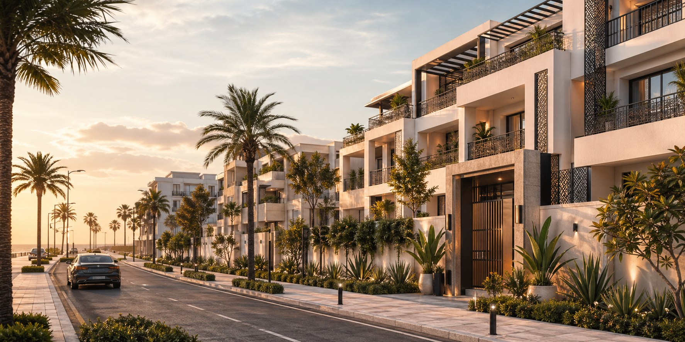
Lot Founty 📍 Agadir Land project with a rich useful-points map. View project → -
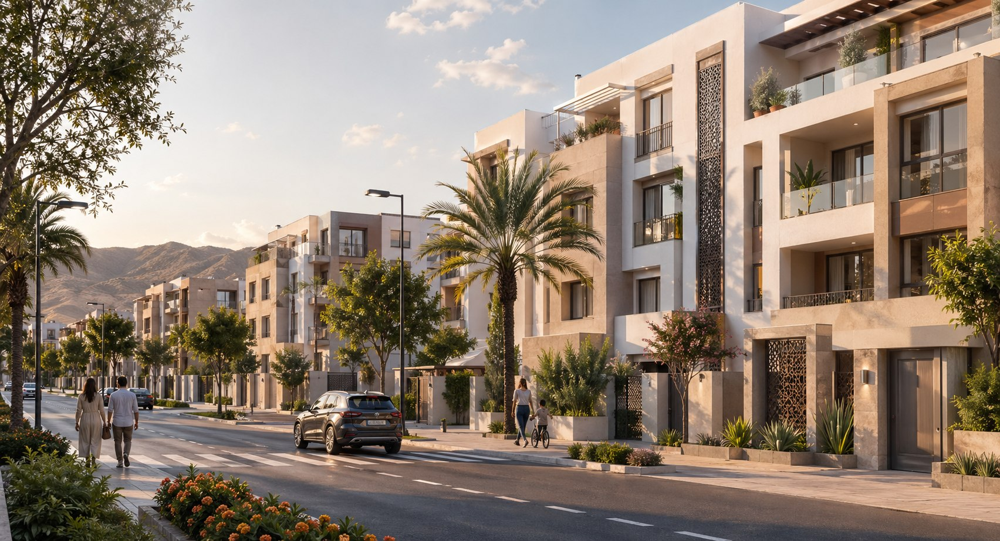
Lot Nahda 2 📍 Nahda, Agadir Narjiss project shown with location and surrounding context. View project →
Buying in Agadir: what to know
Before you decide, these guides answer the questions that come up most often.
A project in Agadir?
Our advisors know every neighbourhood in the city. Tell us what you are looking for and we will point you the right way.